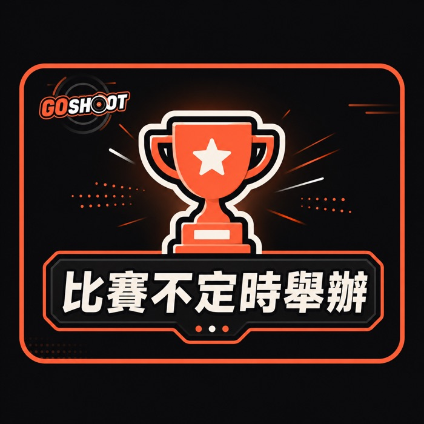
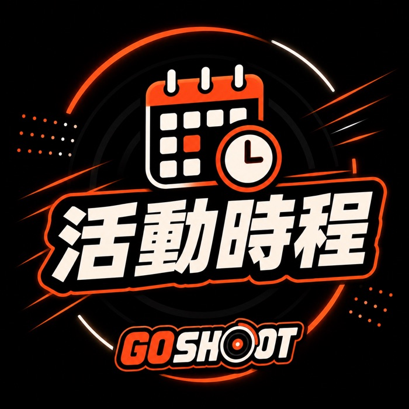
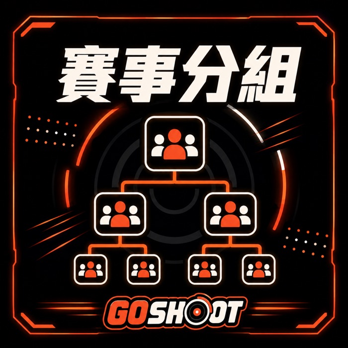
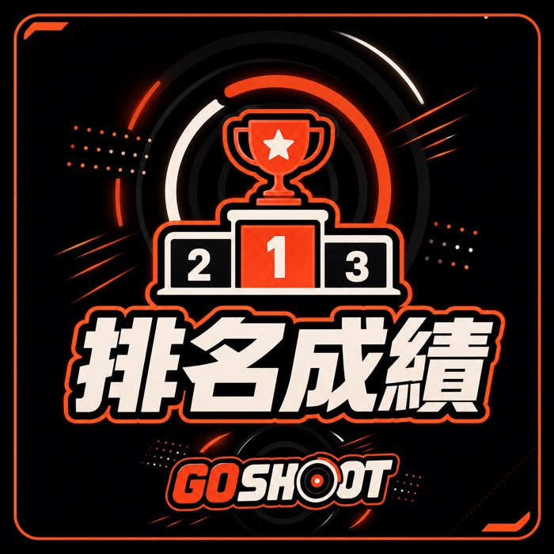

賽場開放練習，當日消費即可開打。來找對手、練手感最快的地方。
固定一天舉辦（如每週六）。瑞士制數輪後前四強單淘汰決賽，每場三戰兩勝。
月底大賽，積分加倍、獎勵升級，產生當月冠軍。
兒童組與公開組分開比、分開頒獎，公平又安全。




| 事項 | 積分 |
|---|---|
| 出賽（每場賽事） | +5 |
| 每勝一局 | +3 |
| 週賽 冠／亞／季 | +30／+20／+10 |
| 月賽 冠／亞／季 | +60／+40／+20 |
排行榜三處同步：店內 RANKING 螢幕、本網站、LINE 定期公告。榜上有名，就是最好的榮譽。
| 取得 Go 幣的方式 | 回饋 |
|---|---|
| 消費 | 每 NT$50 = 1 幣 |
| 賽事得名 | 額外加贈 |
| 帶新朋友來 / 留 Google 評價 | 額外加贈 |
Go 幣可兌換商品、折價、免報名費與會員限定款。會員（LINE 綁定）另享：新品與限定款優先預購權、生日禮、會員專屬賽事、Go 幣加倍日。
戰鬥陀螺是一項全球化的競技。想知道世界頂尖在打什麼、國際賽怎麼參加？這幾篇帶你跟上：